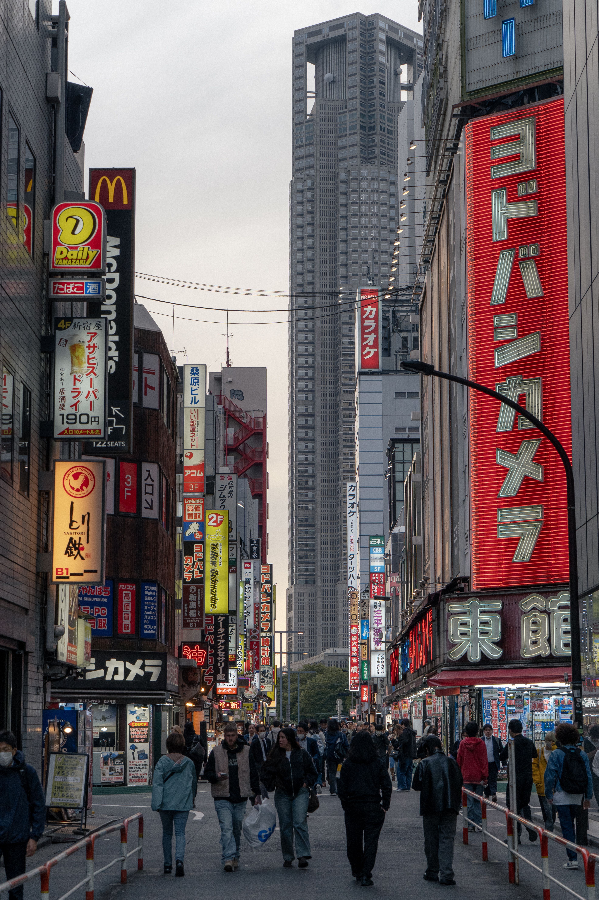

Токіо, Японія

Коротка характеристика
Токіо — столиця Японії та одна з найбільших міських агломерацій світу. Тут поєднуються високі технології та традиційна японська культура.
Чому я обрав це місто
Токіо вразило мене контрастами: за кілька хвилин можна перейти від галасливого перехрестя Сібуя до тихого синтоїстського святилища. До того ж місто надзвичайно чисте, безпечне й зручне.
Цікаві факти
- Телевежа Tokyo Skytree має висоту 634 метри й належить до найвищих веж світу.
- Метро Токіо — одне з найзавантаженіших у світі, поїзди курсують із точністю до секунд.
- Раніше місто називалося Едо й стало столицею Японії у 1868 році.
- Перехрестя Сібуя вважається одним із найлюдніших пішохідних перехресть у світі.
Визначні місця
- Храм Сенсодзі в районі Асакуса
- Перехрестя Сібуя
- Святилище Мейдзі
- Телевежа Tokyo Skytree
- Район Акіхабара
Моя оцінка
| Критерій | Оцінка |
|---|---|
| Атмосфера | 9 / 10 |
| Архітектура | 9 / 10 |
| Їжа | 10 / 10 |
| Транспорт | 10 / 10 |
| Ціни | 8 / 10 |
| Загальна оцінка | 9,3 / 10 |